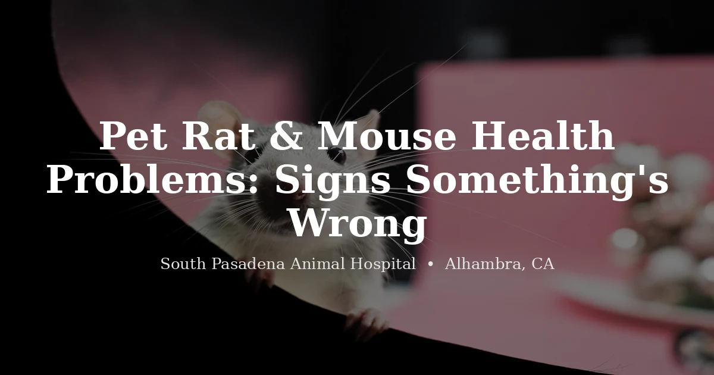

June 9, 2026 · 8 min read
Pet Rat and Mouse Health Problems: What Owners Need to Watch For

Rats and mice get a bad rap as "starter pets" — something easy to keep in a kid's room until the novelty wears off. Anyone who's actually lived with one knows better. They're curious, social, and surprisingly expressive once they trust you. They're also short-lived (most pet rats live two to three years, mice closer to one and a half to two), and that compressed lifespan means health problems tend to show up early and move fast.
We see a fair number of rats and mice in our clinic, and a pattern repeats: owners notice "a little sneeze" or "a small bump" weeks before bringing the animal in, because the signs seemed minor at first. With small rodents, minor can turn into serious in a matter of days. Here's what we want every rat and mouse owner to recognize early — and what's worth a same-week call versus a same-day one.
The Most Common Health Problems in Pet Rats and Mice
Respiratory Infections (Often Linked to Mycoplasma)
If there's one condition that defines "rat health" as a topic, it's chronic respiratory disease. Many pet rats carry Mycoplasma pulmonis — an organism that can sit quietly in the respiratory tract for a long time without causing obvious problems. Then something tips the balance: a stressful move, a draftier cage spot, ammonia buildup from bedding that's gone too long between changes — and suddenly your rat is sneezing, wheezing, or breathing audibly.
The signs to watch for: frequent sneezing, a clicking, rattling, or "chattering" sound when breathing, labored or open-mouth breathing, reduced activity, and red-tinged discharge around the eyes and nose. That red discharge is usually porphyrin — a substance rats naturally secrete when stressed or unwell — and it looks a lot more alarming than it sometimes is. Still, a heavy amount of it is a sign something's off, not something to wipe away and ignore.
Labored breathing is urgent. A rat or mouse working hard to breathe — open-mouth breathing, audible wheezing with visible effort, or a hunched posture with rapid breaths — needs to be seen the same day. Respiratory disease in small rodents can progress quickly, and because they're small, they have very little reserve to fall back on. Call (626) 441-1314.
Because mycoplasma-related respiratory disease tends to be chronic — meaning it can improve and then return — many rats need ongoing management rather than a single round of treatment that "cures" it. We tailor that to the individual animal based on what we find on exam. Good ventilation, frequent cage cleaning, and dust-free bedding go a long way toward keeping flare-ups less frequent.
Mammary Tumors
This is one of the more common growths we find in pet rats, especially unspayed females — though males get them too, more often than people expect. Here's the part that surprises new owners: rat mammary tissue extends much farther across the body than it does in cats or dogs. A lump on the belly, the side, near a shoulder, or even up by the neck can be mammary in origin.
Most mammary masses in rats are benign, but "most" isn't "all," and the only way to know what you're dealing with is to have it examined — ideally soon after you notice it, since smaller masses are generally easier to manage than ones that have had time to grow. If you find any new lump on your rat, get it looked at. We'd rather examine ten lumps that turn out to be nothing than have an owner wait on the one that wasn't.
Spaying can reduce the likelihood of mammary tumors in female rats — it's a conversation worth having with your vet while your rat is young and healthy, not after a lump shows up.
Overgrown Incisors and Other Dental Problems
Like all rodents, rats and mice have incisors that grow continuously throughout life. Normal chewing wears them down. When that balance is off — because of misalignment, injury to the jaw, or simply not enough appropriate things to gnaw on — the teeth can overgrow, curl, and eventually make it painful or impossible to eat normally.
Watch for: drooling, weight loss, dropping food after picking it up, pawing at the mouth, or visibly long or crooked front teeth. A rat that's lost interest in its favorite treats but still seems hungry — circling the food dish, picking food up and putting it down — is often telling you that eating itself has become uncomfortable.
Overgrown incisors need to be trimmed by a vet using proper equipment — not by an owner with nail clippers, which risks cracking the tooth down to the root and causing far worse problems than the overgrowth itself.
Skin and Fur Problems
Fur mites are common in pet rats and mice, and they're more often a sign of a stressed or already-unwell animal than a hygiene failure on the owner's part — mites can flare up even in clean, well-kept cages. Signs include scratching, scabbing (especially around the neck, shoulders, and base of the tail), patchy hair loss, and a generally unkempt coat.
In group-housed mice, you'll also sometimes see "barbering" — patches of fur nibbled short or bald, usually around the face and back, caused by a dominant cage mate rather than disease. It can look concerning, but it's a social dynamic, not a parasite, and it's worth mentioning to your vet so the right cause gets identified rather than assumed.
Bite wounds from cage mates are another thing we see, particularly in male mice, who can be territorial. Any wound that looks deeper than a scratch, or that isn't closing within a couple of days, should be checked — small wounds on small animals can become bigger problems faster than you'd expect.
Obesity and Diet-Related Issues
Seed-heavy diets are popular because rats and mice love them — and that's exactly the problem. Seed mixes are calorie-dense, and a rodent allowed to pick out only its favorite bits ends up with an unbalanced diet and, over time, excess weight. We also see fatty lipomas (benign fatty growths under the skin) more often in rats fed this way.
A diet built around a quality lab-block formula, with fresh vegetables and only occasional seeds or treats, keeps weight in check and tends to track with a longer, more comfortable life. If your rat already looks rounder than it used to, or has gone from active and curious to slow and sedentary, it's worth a conversation with your vet about diet and activity — not a guessing game at home.
Husbandry: The Basics That Prevent Most of These Problems
Most of what we see traces back to the fundamentals — cage setup, social needs, and air quality, more than anything exotic.
- Companionship: Rats and mice are highly social. A single rat or mouse, kept alone long-term, tends to be more stressed — and stress is a known trigger for the chronic respiratory issues we mentioned above. Same-sex pairs or small groups (with appropriate spay/neuter to prevent unwanted litters) are generally the better setup.
- Ventilation and bedding: Ammonia from urine builds up fast in an enclosed cage. Spot-clean regularly and do a full bedding change on a consistent schedule. Choose dust-free, unscented bedding — avoid cedar and pine shavings, which release aromatic oils that irritate small rodents' respiratory tracts.
- Cage size and enrichment: Bigger is better. Multiple levels, hammocks, tunnels, chew toys, and a running wheel sized appropriately for the animal all support both physical health and the mental stimulation these genuinely smart animals need.
- Diet: A quality lab-block formula as the base, with fresh vegetables daily and seeds or treats kept to an occasional extra — not the main event.
- Temperature: Keep the cage out of direct sun and away from drafts. Rats and mice do best in stable room-temperature environments, generally in the same comfortable range humans prefer.
When to See a Vet
Rats and mice hide illness less dramatically than reptiles do, but they're still small prey animals — by the time something is obviously wrong, it's often been building for a while. Here's when to call rather than wait:
- Labored, open-mouth, or audibly effortful breathing — same-day concern
- Persistent sneezing, wheezing, or clicking sounds when breathing
- Any new lump, bump, or swelling anywhere on the body
- Drooling, dropping food, or sudden disinterest in favorite treats
- Visible weight loss, a hunched posture, or a noticeably duller coat
- Patchy hair loss, scabbing, or persistent scratching
- Wounds that look deep, are swollen, or aren't healing within a couple of days
- A sudden drop in activity or social interaction — a rat that stops coming to the cage door is usually telling you something
We know rats and mice don't always get treated with the same urgency as a dog or cat — but they're just as capable of being genuinely sick, and just as deserving of a proper exam. If something seems off, call us. We'd rather talk you through it than have you wait and wonder.
We see pet rats, mice, and other small exotic companions at South Pasadena Animal Hospital in Alhambra, serving the San Gabriel Valley. To schedule an appointment, call (626) 441-1314 or book online. Appointments are required.
Frequently Asked Questions About Pet Rat and Mouse Health
What are the most common health problems in pet rats and mice?
The issues we see most are respiratory infections (often tied to Mycoplasma pulmonis), mammary tumors — especially in unspayed females — overgrown incisors and other dental problems, mites and skin issues, and weight gain related to diet and lack of enrichment. Chronic respiratory disease in particular is something rat owners should know to watch for, since it can wax and wane over the animal's life.
How do I know if my pet rat is sick?
Watch for sneezing, audible clicking or rattling when breathing, red discharge around the eyes or nose (porphyrin — normal in small amounts, but notable in larger amounts), labored breathing, a head tilt, lumps anywhere on the body, weight loss, drooling, hunched posture, or reduced activity. Rats are typically social and curious, so one that suddenly wants to be left alone is usually telling you something is wrong.
Why do rats get so many respiratory infections?
Many pet rats carry Mycoplasma pulmonis, an organism that can live quietly in the respiratory tract for a long time. Stress, poor ventilation, ammonia buildup from bedding, or a weakened immune system can let it flare into active illness — sneezing, wheezing, labored breathing, and a tendency for symptoms to come and go over time. This is a big part of why cage hygiene and air quality matter so much specifically for rats.
Are mammary tumors common in pet rats?
Yes — they're among the most frequently diagnosed growths in pet rats, particularly unspayed females, though males can develop them too. Because rat mammary tissue extends much farther across the body than in cats or dogs, a lump can appear almost anywhere on the trunk. Any new lump should be examined by a vet promptly; earlier evaluation generally means more options.
Does SPAH see pet rats and mice in Alhambra?
Yes. South Pasadena Animal Hospital sees pet rats, mice, and other small exotic companions at our Alhambra location, 3116 W Main St, Alhambra, CA 91801. Call (626) 441-1314 or book online to schedule an appointment.